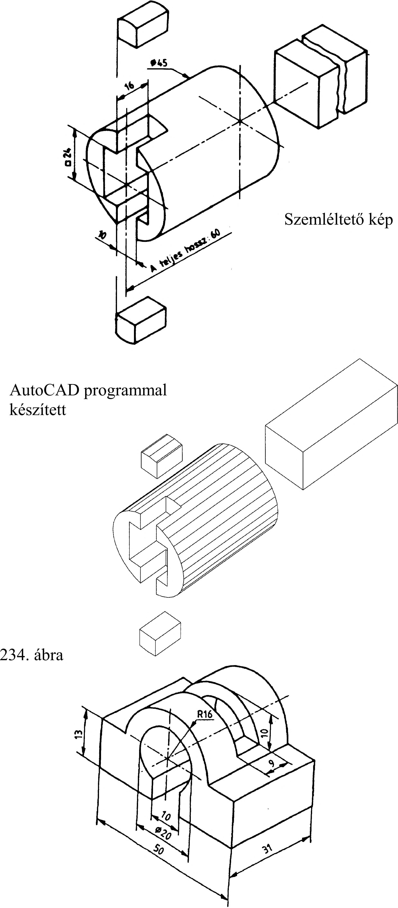

12. Műszaki vázlatkészítés 12. Felvételi vázlatkészítés A gépek, készülékek berendezések és alkatrészeik tervezői műszaki gondolataikat először szabadkézi vázlatban rögzítik. Meglevő alkatrészekről is készíthetünk felvételi vázlatot A felvételi vázlaton a géprajz szabályait betartjuk, bár szabadkézzel rajzolunk. A felvételi vázlat a gépalkatrész szerkesztésének terve. 12.1. A vázlatkészítés menete A vázlatkészítés első lépése: megvizsgálni az alkatrész szerepét a szerkezetben és kapcsolatát a csatlakozó alkatrészekhez. Ez a vizsgálódás támpontot ad az igénybevételről, a csatlakozó méretekről stb. Az alkatrész szerepét tehát először működési és elkészítési szempontból vizsgáljuk. A második lépésben az alkatrészt geometriai, formai szempontból vizsgáljuk. A gépalkatrészek formájának és tagoltságának változatossága igen nagy. Egyszerű, kevésbé tagolt alkatrészek vázolását célszerű a befoglaló formából kiindulva végezni. A befoglaló formából csonkítással készült vázlatok esetén a gyártás lépéseit is követhetjük. A bonyolultabb, erősen tagolt alkatrészek vázlatát a részletekből felépítve készíthetjük el. 12.2. Lebontó vázlatkészítés Első lépésben tanulmányozzuk az alkatrész szerepét és helyét a szerkezetben. Ezután elemezzük a tárgyat formai szempontból: milyen mértani testekből épül fel, milyen megmunkálásokkal készíthető el? Melyek a tárgy fő arányai? Az 234. ábra a vázolást megelőző képzeletbeli lebontást szemlélteti. 12.3. Felépítő vázlatkészítés A vázlatkészítést bonyolult tagoltságú alkatrész esetében célszerű a részletekből felépítve végezni. Az ilyen alkatrészek általában öntéssel, kovácsolással, hegesztéssel stb. készülnek. Itt is vizsgáljuk meg először az alkatrész szerepét a szerkezetben, majd a forma alakját és arányait. A részletekből felépített vázolás alapja a tárgy építőelemekre bontása (235. ábra). AutoCAD programmal készített szemléltető kép a) Szemléltető kép 235. ábra b) 65
